Transmission Lines Secrets
© Jean-Louis Noullet 2017
The Two Questions
L' and
C' being the values of inductance per unit length and capacitance per unit length,
the
Telegrapher's Equations applied to the
model of lossless transmission lines
yield the following expressions :
- Characteristic impedance : 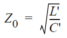
- Propagation velocity : 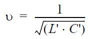
It looks like one can have full control over the characteristic impedance and the propagation velocity.
But commercially available cable have
Z0 impedances in the range of 40 to 75 Ohms for coaxial cables, and 100 to 300 Ohms for
balanced pairs and twisted pairs.
Hence the
questions :
- Is it possible to make cables of any arbitrary impedance, or are there physical bounds to Z0 ?
- Is it possible to achieve any arbitrary propagation speed ? greater than the speed of light ?
Answers at the end of the document...
1. General expressions for L' and C'
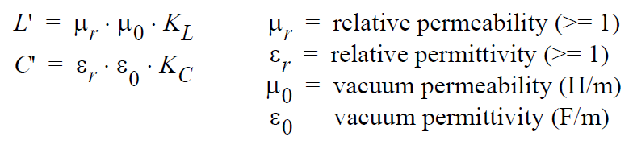
where
KC and
KC are dimensionless functions of the geometry of the line cross-section.
These factors may depend on frequency because the distribution of current inside conductors varies according to
the "skin effect", but they are always strongly connected together, as a consequence of Maxwell's equations.
When the frequency dependance is neglected, this connection is expressed by :
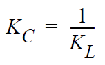
The relative magnetic permeability is 1.0 for every non-ferromagnetic material.
The relative permittivity belongs to the insulating material surrounding or separating the conductors, so
these formulas apply only where a single insulating material is used.
2. Characteristic Impedance
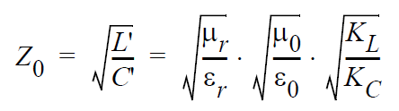
This expression may be simplified, taking into account the definition of the impedance of free space, which is a derived physical constant
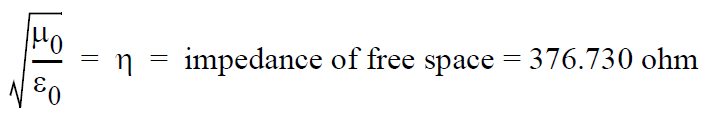
and the connection between
KL and
KC :
3. Propagation Velocity
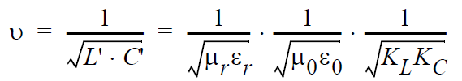
This expression may be simplified, taking into account the connection between vacuum constants and the speed of light
c
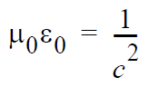
as well as the connection between
KL and
KC :
This is just the same as the speed of light (or any TEM electromagnetic wave) in the insulating material.
Figures for typical plastic-insulated cables :
| dense plastic Er=2.3 | plastic foam Er=1.5 | Light |
| speed | 0.20 m/ns | 0.24 m/ns | 0.30 m/ns |
| delay | 5 ns/m | 4 ns/m | 3.3 ns/m |
4. Typical Examples
Coaxial Cable
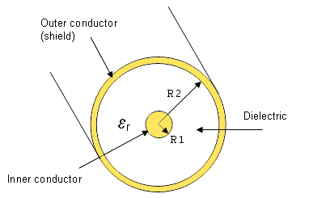
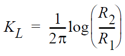
| R2/R1 | Z0 with Er=2.3 | Z0 with Er=1.5 |
| 3 | 43.4 | 53.8 |
| 6 | 70.8 | 87.7 |
| 10 | 91 | 113 |
| 20 | 118 | 147 |
| 100 | 182 | 225 |
Parallel Wires (Balanced Pair)
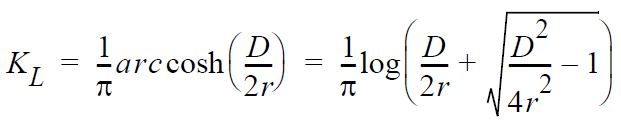
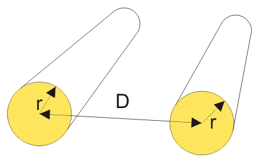
| D/r | Z0 with Er=2.3 | Z0 with Er=1.5 |
| 3 | 76 | 94 |
| 6 | 139 | 172 |
| 10 | 181 | 224 |
| 20 | 237 | 293 |
| 100 | 364 | 451 |
When
D/r >> 1, the following approximation may be used:
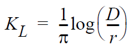
5. The Answers
- Yes, it is theoretically possible to make coaxial cables and pair cables of any impedance, but extreme values
would require extremely thick or extremely thin conductors which are impractical
- No, it is not possible to achieve any speed, as well as it is not possible to create a material of an arbitrary
relative permittivity.
The relative permittivity being always greater than one, the propagation speed is always lower than the speed of light in vacuum.
Notes
Low impedances are preferred for coaxial cables for efficiency reasons (minimal loss), not for ease of manufacturing.
Low impedance coaxial cables (R2/R1 <= 3) may be made with a hollow central conductor to save material :
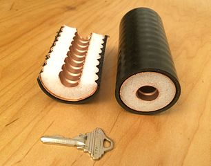
source Wikipedia
For special applications (delay lines), the propagation speed may be greatly reduced by including ferromagnetics materials or
creating an additional inductive coupling between neighboring LC sections.
{kind=link}